8.3 Example: Self-referential Aptitude Test
This example illustrates three issues: expressing complex propositional formulas as reified constraints, improving performance and presentation by elimination of common subconstraints, and using the symbolic constraint posted by FD.element.
Problem Specification
The self-referential aptitude test (which is taken from [Hen96]) consists of 10 multiple choice questions, referred to as 1 to 10. Each question allows for 5 possible answers, referred to as a to e. For each of the 50 possible answers, a condition is specified. For each question, exactly one of the conditions associated with its possible answers must hold. A solution of the test is a function assigning to every question a letter such that the condition selected by the assigned letter holds. Here are the questions and their possible answers:
The first question whose answer is b is question (a) 2; (b) 3; (c) 4; (d) 5; (e) 6.
The only two consecutive questions with identical answers are questions (a) 2 and 3; (b) 3 and 4; (c) 4 and 5; (d) 5 and 6; (e) 6 and 7.
The answer to this question is the same as the answer to question (a) 1; (b) 2; (c) 4; (d) 7; (e) 6.
The number of questions with the answer a is (a) 0; (b) 1; (c) 2; (d) 3; (e) 4.
The answer to this question is the same as the answer to question (a) 10; (b) 9; (c) 8; (d) 7; (e) 6.
The number of questions with answer a equals the number of questions with answer (a) b; (b) c; (c) d; (d) e; (e) none of the above.
Alphabetically, the answer to this question and the answer to the following question are (a) 4 apart; (b) 3 apart; (c) 2 apart; (d) 1 apart; (e) the same.
The number of questions whose answers are vowels is (a) 2; (b) 3; (c) 4; (d) 5; (e) 6.
The number of questions whose answer is a consonant is (a) a prime; (b) a factorial; (c) a square; (d) a cube; (e) divisible by 5.
The answer to this question is (a) a; (b) b; (c) c; (d) d; (e) e.
To understand the test, verify that
1:c | 2:d | 3:e | 4:b | 5:e |
6:e | 7:d | 8:c | 9:b | 10:a |
is a correct set of answers for the test. In particular, convince yourself that for every question the remaining 4 possibilities to answer it are falsified. The script we are going to write will prove that there is no other set of correct answers.
Model
Our model has 0/1-variables  , 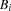,
, 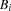,  , and 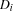 for
, and 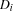 for  such that:
such that:
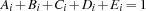.
 iff the answer to Question
iff the answer to Question  is a.
is a.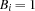 iff the answer to Question
is b.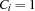 iff the answer to Question
is c.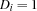 iff the answer to Question
is d. iff the answer to Question is e.
iff the answer to Question is e.
To obtain a compact representation of the questions, we also have variables  for such that
for such that
| 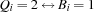 |
|
|
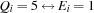 |


The first question can now be expressed by means of five equivalences:

These equivalences can be expressed by reifying the nested equality constraints.
The second question can be expressed with the following constraints:

The third question can be expressed as follows:
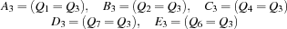
The fourth question can be elegantly expressed with the constraint
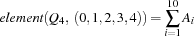
where the function 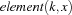 yields the  -th component of the tuple
-th component of the tuple  .
.
We choose this formulation since Oz provides a propagator FD.element for the constraint  .
.
reified membership constraints
The nineth question can be expressed with the following equations
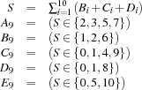
where  is an existentially quantified auxiliary variable. This time we use reified membership constraints of the form
is an existentially quantified auxiliary variable. This time we use reified membership constraints of the form  .
.
Distribution Strategy
We distribute on the variables using the standard first-fail strategy.
Script
proc {SRAT Q}
proc {Vector V} % V is a 0/1-vector of length 10
{FD.tuple v 10 0#1 V}
end
proc {Sum V S} % S is the sum of the components of vector V
{FD.decl S} {FD.sum V '=:' S}
end
proc {Assert I U V W X Y}
A.I=U B.I=V C.I=W D.I=X E.I=Y
end
A = {Vector} B = {Vector}
C = {Vector} D = {Vector} E = {Vector}
SumA = {Sum A} SumB = {Sum B} SumC = {Sum C}
SumD = {Sum D} SumE = {Sum E}
SumAE = {Sum [SumA SumE]} SumBCD = {Sum [SumB SumC SumD]}
in
{FD.tuple q 10 1#5 Q}
{For 1 10 1
proc {$ I} {Assert I Q.I=:1 Q.I=:2 Q.I=:3 Q.I=:4 Q.I=:5} end}
%% 1
{Assert 1 B.2
{FD.conj B.3 (B.2=:0)}
{FD.conj B.4 (B.2+B.3=:0)}
{FD.conj B.5 (B.2+B.3+B.4=:0)}
{FD.conj B.6 (B.2+B.3+B.4+B.5=:0)}}
%% 2
{Assert 2 Q.2=:Q.3 Q.3=:Q.4 Q.4=:Q.5 Q.5=:Q.6 Q.6=:Q.7}
Q.1\=:Q.2 Q.7\=:Q.8 Q.8\=:Q.9 Q.9\=:Q.10
%% 3
{Assert 3 Q.1=:Q.3 Q.2=:Q.3 Q.4=:Q.3 Q.7=:Q.3 Q.6=:Q.3}
%% 4
{FD.element Q.4 [0 1 2 3 4] SumA}
%% 5
{Assert 5 Q.10=:Q.5 Q.9=:Q.5 Q.8=:Q.5 Q.7=:Q.5 Q.6=:Q.5}
%% 6
{Assert 6 SumA=:SumB SumA=:SumC SumA=:SumD SumA=:SumE _}
%% 7
{FD.element Q.7 [4 3 2 1 0] {FD.decl}={FD.distance Q.7 Q.8 '=:'}}
%% 8
{FD.element Q.8 [2 3 4 5 6] SumAE}
%% 9
{Assert 9 SumBCD::[2 3 5 7] SumBCD::[1 2 6]
SumBCD::[0 1 4 9] SumBCD::[0 1 8]
SumBCD::[0 5 10]}
%% 10
{FD.distribute ff Q}
end
Figure 8.2: A script for the self-referential aptitude test.
elimination of common subconstraints
The script in Figure 8.2 implements the indexed variables , , , ,  , and
, and  as tuples with 10 components each. The three procedures
as tuples with 10 components each. The three procedures Vector, Sum, and Assert make it more convenient to state the constraints. For each sum occurring in the questions an auxiliary variable is introduced so that the corresponding summation constraint needs to be posted only once. This elimination of common subconstraints provides for a compact formulation of the script and also improves its performance.
The procedure {FD.element K V X} posts a propagator for the constraint saying that X is the K-th component of the vector V.
Note the use of FD.decl in the definition of the procedure Sum and in the representation of the seventh question. Telling an initial domain constraint for the respective variables is necessary so that the propagators depending on these variables can start their work.
Exercises
Exercise 8.4 (See solution)
The script in Figure 8.2 uses the statement
{FD.element Q.7 [4 3 2 1 0]
{FD.decl}={FD.distance Q.7 Q.8 '=:'}}to post the constraints for the seventh question. It avoids one auxiliary variable by nesting two equated procedure applications. Give an equivalent statement in which the auxiliary variable is introduced and the nested procedure applications are unfolded.